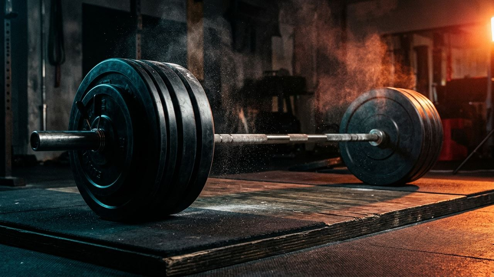

Тема 01 • СилаСилова біомеханіка та пауербілдинг
Багатосуглобова прогресія сили та м’язової гіпертрофії з контролем швидкості грифа VBT, амплітуди й робочих відсотків від 1ПМ.
0.45–0.70 м/с
60–75 хв
Відкрити протокол теми